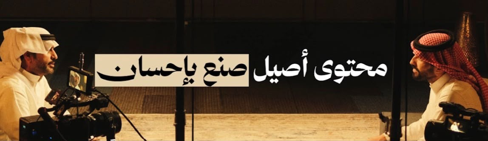
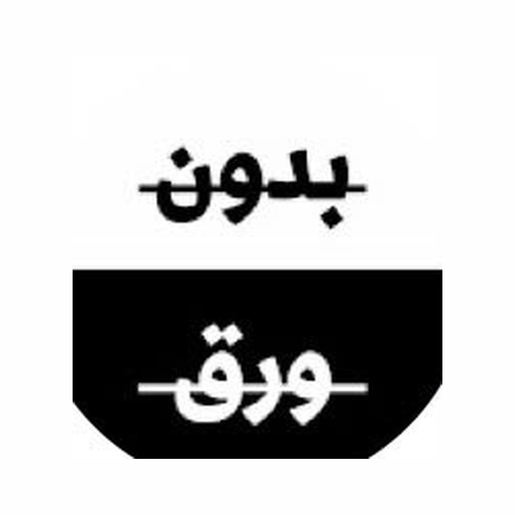
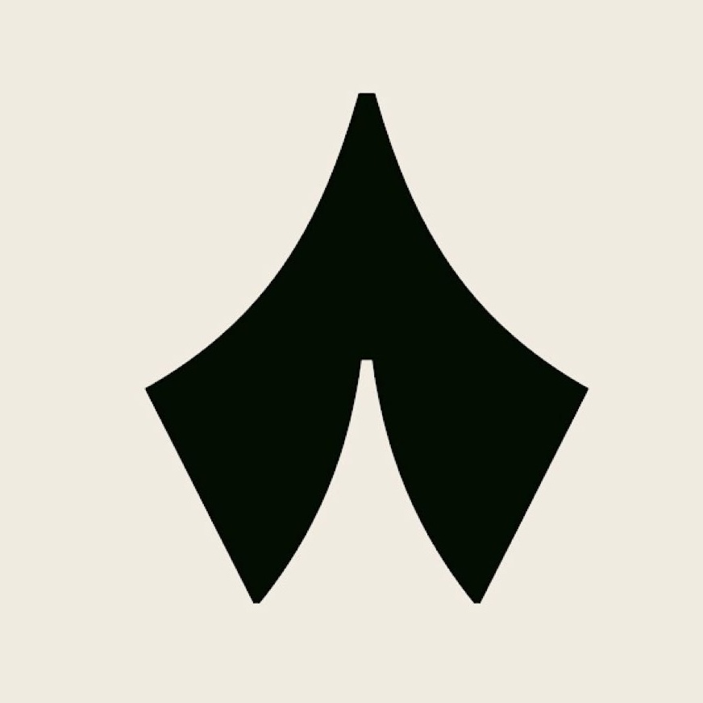

What I Study
Degree
- LinguisticsMajor
- Translation StudiesMinor
Where My Interest Sits
- Phonetics How speech sounds are produced, transmitted and perceived.
- Phonology How those sounds are organised into a system within a language.
- Generative Phonology The rules underlying that system, and what they predict.

My Aims
The Goal
- Conference Interpreter The career I am working toward.
- Simultaneous Interpreting Working from the booth, in real time, as the speaker speaks.
- The United Nations Where I want that work to take place.

Things I Like
Podcasts




Beyond Language
- Coding Python · JavaScript
- Web Development HTML · CSS · Web Applications
- AI & LLMs NLP · Generative AI · Prompt Engineering
- Automation n8n · APIs · AI Workflows
- Cybersecurity Security · Privacy · Digital Safety

Fun Things About Me